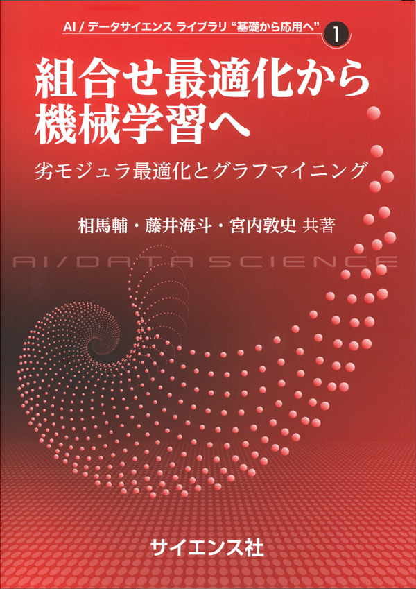

Publications#
See also: Google Scholar, DBLP, Researchmap
Book#
組合せ最適化から機械学習へ: 劣モジュラ最適化とグラフマイニング (From Combinatorial Optimization to Machine Learning: Submodular Optimization and Graph Mining) [Publisher]
with Kaito Fujii, Atsushi Miyauchi,
SAIENSU-SHA Co.,Ltd, 2022.

Refereed Journal and Conference Articles#
Accelerating operator Sinkhorn iteration with overrelaxation
with André Uschmajew
O(log n)-Approximation Algorithms for Bipartiteness Ratio [ArXiv]
with Mingquan Ye, Yuichi Yoshida
Integer Programming and Combinatorial Optimization (IPCO), 2026. [Proceedings]
(Previous title: “Cut-Matching Games for Bipartiteness Ratio of Undirected Graphs”)
Online Algorithms for Spectral Hypergraph Sparsification [full text] [ArXiv]
with Kam Chuen Tung and Yuichi Yoshida
Mathematical Programming, Volume 216, pp. 627–650, 2026.
Integer Programming and Combinatorial Optimization (IPCO), 2024. [Proceedings]
Algorithmic aspects of semistability of quiver representations [Proceedings] [ArXiv]
with Yuni Iwamasa, Taihei Oki
The 52nd International Colloquium on Automata, Languages, and Programming (ICALP), 2025.
Difference-of-submodular Bregman Divergence [Proceedings]
with Masanari Kimura, Takahio Kawashima, and Hideitsu Hino
The 13th International Conference on Learning Representations (ICLR), 2025.
Algebraic Algorithms for Fractional Linear Matroid Parity via Non-commutative Rank [ArXiv]
with Taihei Oki
SIAM Journal on Computing, 54(1), 2025.
ACM-SIAM Symposium on Discrete Algorithms (SODA), 2023. [Proceedings]
Algebraic combinatorial optimization on the degree of determinants of noncommutative symbolic matrices
with Hiroshi Hirai, Yuni Iwamasa, Taihei Oki
Shrunk subspaces via operator Sinkhorn iteration [ArXiv]
with Cole Franks and Michel X. Goemans
ACM-SIAM Symposium on Discrete Algorithms (SODA), 2023. [Proceedings]
Online Risk-averse Submodular Maximization
with Yuichi Yoshida
Annals of Operations Research, 320, pp. 393–414, 2023.
The 30th International Joint Conference on Artificial Intelligence (IJCAI), 2021. [Proceedings]
Information Geometry of Operator Scaling
with Takeru Matsuda
Linear Algebra and its Applications, 649, pp. 240–267, 2022.
Polynomial-Time Algorithms for Submodular Laplacian Systems
with Kaito Fujii and Yuichi Yoshida
Improved Algorithms for Online Submodular Maximization via First-order Regret Bounds [Proceedings]
with Chris Liaw and Nick Harvey
Advances in Neural Information Processing Systems (NeurIPS), 2020.
Tight First- and Second-Order Regret Bounds for Adversarial Linear Bandits [Proceedings]
with Shinji Ito, Shuichi Hirahara, and Yuichi Yoshida
Advances in Neural Information Processing Systems (NeurIPS), 2020, spotlight.
No-regret algorithms for online k-submodular maximization [Proceedings] [ArXiv]
The 22nd International Conference on Artificial Intelligence and Statistics (AISTATS), 2019.
Spectral Sparsification of Hypergraphs [PDF] [Proceedings]
with Yuichi Yoshida
Fast greedy algorithms for dictionary selection with generalized sparsity constraints [Proceedings]
with Kaito Fujii
Advances in Neural Information Processing Systems (NeurIPS), 2018, spotlight.
Maximizing Monotone Submodular Functions over the Integer Lattice [full text] [ArXiv]
with Yuichi Yoshida
Mathematical Programming, 172, pp.539–563, 2018.
Integer Programming and Combinatorial Optimization (IPCO), 2016
A New Approximation Guarantee for Monotone Submodular Function Maximization via Discrete Convexity [ArXiv]
with Yuichi Yoshida
The 45th International Colloquium on Automata, Languages, and Programming (ICALP), 2018.
On orthogonal tensors and best rank-one approximation ratio [ArXiv]
with Zhening Li, Yuji Nakatsukasa, and André Uschmajew
SIAM Journal on Matrix Analysis and Applications, 39 (1), pp. 400–425, 2018.
Regret Ratio Minimization in Multi-objective Submodular Function Maximization [PDF]
with Yuichi Yoshida
Non-monotone DR-Submodular Function Maximization [ArXiv]
with Yuichi Yoshida
Finding a low-rank basis in a matrix subspace [Full text] [ArXiv]
with Yuji Nakatsukasa and André Uschmajew
Non-Convex Compressed Sensing with the Sum-of-Squares Method [Proceedings] [PDF]
with Yuichi Yoshida
Multicasting in Linear Deterministic Relay Network by Matrix Completion [PDF(technical report)]
IEEE Transactions on Information Theory, 62(2), pp. 870–875, 2016.
IEEE International Symposium on Information Theory (ISIT), 2014
A Generalization of Submodular Cover via the Diminishing Return Property on the Integer Lattice [Proceedings]
with Yuichi Yoshida
Advances in Neural Information Processing Systems (NIPS), 2015, poster
Optimal Budget Allocation: Theoretical Guarantee and Efficient Algorithm [PDF(extended version)]
with Naonori Kakimura, Kazuhiro Inaba, and Ken-ichi Kawarabayashi
International Conference on Machine Learning (ICML), 2014, Cycle 1 (acceptance rate: 27%)
Fast Deterministic Algorithms for Matrix Completion Problems, [PDF]
SIAM Journal on Discrete Mathematics, 28(1), pp. 490–502, 2014.
Integer Programming and Combinatorial Optimization (IPCO), 2013
Refereed Workshop Article#
Maximally Invariant Data Perturbation as Explanation [ArXiv]
with Satoshi Hara, Kouichi Ikeno, and Takanori Maehara
ICML Workshop on Human Interpretability in Machine Learning (WHI), 2018
Preprints#
Quiver Semistability and Structured Kalman Decompositions for Networked Linear Dynamical Systems [ArXiv]
with Kazuo Murota
ArXiv, 2026.
Numerically stable variants of overrelaxation for operator Sinkhorn iteration [ArXiv]
with Henrik Eisenmann, Xun Tang, and André Uschmajew
ArXiv, 2026.
Optimal algorithms for group distributionally robust optimization and beyond [ArXiv]
with Khashayar Gatmiry, Stefanie Jegelka
ArXiv, 2022.
Statistical Learning with Conditional Value at Risk [ArXiv]
with Yuichi Yoshida
ArXiv, 2020.
Theses#
Master thesis: “Faster Deterministic Algorithms for Matrix Completion Problems,”
Kyoto University, 2013, supervised by Satoru Iwata.
Operation Research Society Japan Student Paper Award (第31回日本オペレーションズ・リサーチ学会学生論文賞)
Doctoral dissertation: “Submodular and Sparse Optimization Methods for Machine Learning and Communication,”
Graduate School of Information Science and Technology, The University of Tokyo, 2016, supervised by Satoru Iwata.
Graduate School Distiguished Doctoral Thesis Award (情報理工学系研究科研究科長賞)